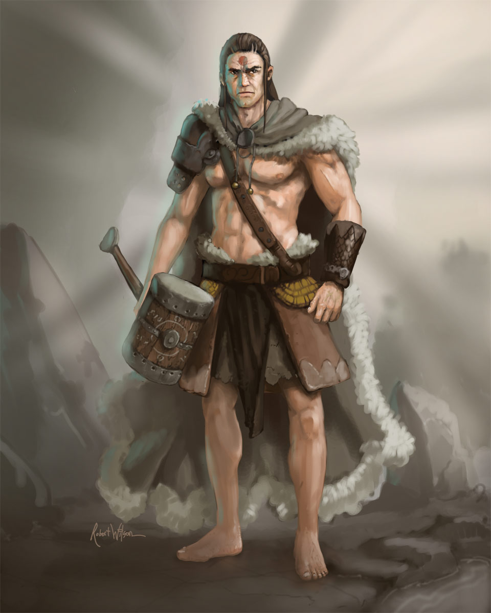

 Once a weapon - always a weapon, and Alarik is perhaps the sturdiest in Sire's arsenal. He sought to run from his fate - he would be a simple fisherman - a lie lived for three decades. Maybe in another life his sins would be forgotten and his life would end in irrelevance ... But what seemed like a simple job tied this man to a group on the path of adventure and under the ire of his former master.
Powers
1) Symbols of the Sire.
Tattoos etched into the flesh of a beast meant equal times to contain it and to grant it power in
controlled measures. The etchings tell a story of enslavement to a benevolent master with goals
beyond the beasts understanding, and of a monster shackled and lost to its base instincts.
Alarik carries these markings with him, and after they awakened he taps into their power once more
sacrifising his blood to his shadowy master, and with each droplet delving deeper and deeper into
his all-consuming rage. With each vampire slain, Alarik feasts on their blood, reclaiming a portion of what was once lost in a feeding
frenzy which can only be described as demonic.
Age: 74;? Height: 1.77m; Weight: 75kg. Str: 20 Dex: 16 Con: 15 Int: 11 Wis: 6 Cha: 14